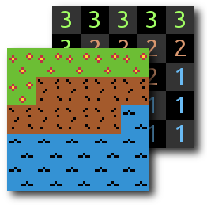
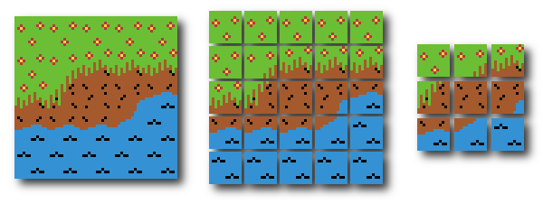
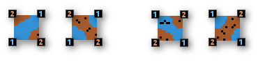
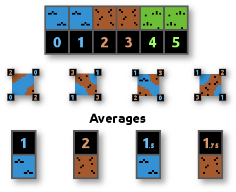
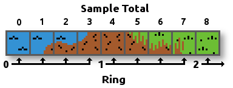
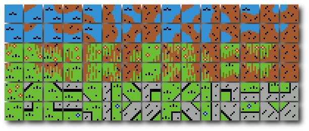

Squares Made for Marching

Marching Squares
is a family of algorithms for automation that appear in everything from isolating isobars on weather graphs to selecting shape outlines
in image editors, and even generating game worlds. To help others wrap their heads around this time saving system we’ll examine procedural tile placement using the algorithm. For a live example try our HTML5 Marching Squares demo.
Building levels of a tile-based game is something like ‘painting’ square images into the world. Each tile is assigned a number, and the game grid is drawn in a ‘paint by numbers’ sort of way. It’s pretty primitive stuff, similar to plotting pixels in an indexed image, but bigger.

At this stage tile placement is easy, it’s essentially just indicating where you want different types of terrain to be: “Let’s put water here and dirt there, and some grass over there”, etc. The graphics are rather blocky, though. In order to ease the transitions between different types of terrain, more tiles are needed.
Where two different types of terrain meet a transition tile of a specific shape satisfies the surrounding area’s matching demands. The more types of terrain that can touch, the more surrounding shape configurations, and the more types of transition tiles are needed.

What was once only three types of terrain tiles became nine unique tiles in the above image, and this is only a small fraction of the total transitions: A modest tileset covering the minimal cases will have over thirty tiles. Manually selecting the proper transition tiles is
tedious and repetitive work. Whenever I hear those words I think:
Automation!
Marching Squares can help, but first it needs the right kind of data to work with. To get in the right frame of mind, don’t concentrate on individual tiles, such as “vertical water to dirt transition”, think about the meaning of the tile corners.
Instead of considering each unique transition tile only the desired type of terrain at the corners is needed: water, dirt, grass, etc. If the metadata is represented as a grid that is diagonally offset from the tile locations, then it’s simple to translate between the tile grid and the metadata.
The reason we don’t align the tiles directly with the metadata grid is that it would increase the number of tiles required to match every edge case. For example: Within some of the metadata squares there are tiles with grass at the top, dirt in the middle and water at the bottom. That’s three terrain types per tile instead of two, which means making many more tiles to match all the possible placements. The problem stems from taking samples at the center of the tile, which requires consideration of corners as well as sides.
When creating tile graphics it’s important to consider how they’ll be used with Marching Squares. Note that the boundary between terrain types occurs at approximately the middle of each tile’s side. Try to avoid having terrain boundaries in the tile corners. If drawing diagonals is desired, then imagine that each tile is really four smaller tiles and scale the tileset to match.
Another important caveat to consider is ambiguous corner cases.

There are a few instances where the terrain type at the corners just doesn’t have enough information to decide what type of tile to use. These ambiguous spots are called
Saddle Points
in mathematics, because of the saddle shape that classically causes them.
There are several methods to cope with saddle points. The simplest solution is to only create tiles for one case. If we favor water over dirt then we can ignore the issue at the cost of a few missing dirt structures. Smaller stream-like structures would be harder to create if dirt is favored over water.
Another solution is to add another corner, i.e., sample metadata at the center of the tile. To support another sample means maintaining more metadata. Instead of storing additional cells of data for a central sample we chose to take the average of the values at the corners. However, the metadata described above lacks the resolution required for this solution to work: The above illustration yields 1.5 for all corner sample averages.
Increasing the range of values in the metadata from three to six possible values (zero through five) allows the center sample to vary.

Fractional metadata values would have worked too, but integers allow us to pack the samples at each corner to quickly create unique tile identification numbers. Each sample occupies no more than 3 bits, so we can shift each corner sample by a factor of three and combine them to create a unique tile ID:
// 'x' and 'y' are the tile coordinates which increase down and right here.
// 'metaData' is the sample matrix (one cell wider & taller than drawn tiles).
// 'T' is top, 'B' is bottom, 'L' is left, 'R' is right, and 's' is for sample.
sTL = metaData[ x ][ y ];
sTR = metaData[ x+1 ][ y ];
sBL = metaData[ x ][ y+1 ];
sBR = metaData[ x+1 ][ y+1 ];
tileID = sTL | (sTR << 3) | (sBL << 6) | (sBR << 9);This would result in a maximum tileID of 2925, which is a pretty big lookup table since we’ve artificially inflated our metadata. Let’s see if we can compress the metadata a bit first, literally: We can shift the samples right one bit (divide by two) to get back to only three metadata values: 0, 1, and 2.
// 'h' stands for half.
hTL = sTL >> 1;
hTR = sTR >> 1;
hBL = sBL >> 1;
hBR = sBR >> 1;
If we combine these values we’ll get a much smaller maximum tile ID, but the saddle points will be upon us again. The ID number doesn’t need to encode whether each individual corner is a higher or lower terrain value to resolve the saddle point; We just need the current tile’s average higher or lower state. While computing the corner average we can dodge the divide by using a few adds and bitwise operations:
saddle = ( (sTL & 1) + (sTR & 1) + (sBL & 1) + (sBR & 1) + 1 ) >> 2;
The sum of the samples’ saddle bits gives 0,1,2,3 or 4. By adding 1 we cause both 3 and 4 to round up when the lower bits are shifted off. This effectively rounds 1.0 and 0.75 up while rounding down 0.5 and lower. To round 0.5 up add 2 instead of 1 before shifting. The saddle value will be either a one or zero for each tile.
With two bits per half corner sample, along with the saddle bit, we can generate a much smaller tile identification number:
tileID = saddle | (hTL << 1) | (hTR << 3) | (hBL << 5) | (hBR << 7);
This gives the tileset a more manageable maximum tileID of 341, but it’s still an order of magnitude larger than the number of tiles in our little tileset. The tiles we’re using don’t accommodate additional cases such as grass touching water, or grass dirt and water in a single tile. For a more comprehensive tileset this would be a good stopping point. Simply map multiple IDs to appropriate tiles via lookup table, or maybe apply another layer of Marching Squares…
Let’s see if we can crunch the expressed encoding down a few bits more. Similar to the saddle point procedure, we save some bits by studying the dataset design and abstracting more meaning.
Set aside saddle points and green grass for now; Let’s study shapes. With water and dirt only, we have just two terrain types, and thus a binary zero or one at each corner. Our prior sampling code caused corners to be assigned powers of two following a Z shape. Given a set of samples we can produce a number corresponding to a shape in the range: 0 to 15 (inclusive).
Similar shapes appear in the other groups of transition tiles. The second to last bit of the metadata samples encodes the tile’s binary boundary shape. We can construct a corresponding shape number by extracting those bits:
shape = (hTL & 1) | (hTR & 1) << 1 | (hBL & 1) << 2 | (hBR & 1) << 3;Now that we’ve extracted the shape and saddle, we just need to determine what two types of terrain the tile spans. To calculate which boundary ‘ring’ we’re operating within, just take the average of the half samples (without remainder):
ring = ( hTL + hTR + hBL + hBR ) >> 2;

Now we have a concise coordinate system for representing our tileset. The ‘ring’ indicates which subset of tiles to select from, the ‘shape’ gives us one of sixteen tile configurations, and the ‘saddle’ indicates whether we’re riding high or not.
tileID = shape | (saddle << 4) | (ring << 5);The maximum tileID is just shy of twice the tiles in the tileset, thanks to the saddle point’s bit essentially doubling the value. To avoid using a lookup table we could place our tiles in the source image according to the ring, saddle, and shape dimensions. A simpler tileset could buck the saddle and utilize only ring and shape. Here we’ve opted to apply the saddle bit to all tiles and produce alternate tiles. The extra tiles add variety but take more time to make, so duplicates can be used as placeholders where no alternative is available.
Since we’re not using a 1D lookup table, we collapse the 3D coordinates into 2D directly:
row = (ring << 1) | saddle;
col = shape - (ring & 1);
The above image is just for illustration, and is missing a couple tiles. Here’s a link to the actual
tileset image. Feel free to use it in your own endeavors. A concrete ring is included to demonstrate the flexibility of allowing the saddle bit to modify other tiles, which allows both 90 and 45 degree angle joints. Additional rings of tiles can be added without changing the tile selection code.
This implementation of Marching Squares was carefully designed to have a couple of features that may seem counter-intuitive. Duplicate tiles have been eliminated at the end of one run of shapes and the beginning of the next; E.g., shape 15 of ring 0 is ‘full of dirt’ and shape 15 of ring 1 is ‘no grass, just dirt’. To avoid redundant tiles there is no shape 15 in ring zero (the first two rows); It’s promoted to the next ring, overlapping with the same shape in ring one. In ring one there is no shape 0 (‘all grass’), it’s promoted to the next ring and becomes shape 0 of ring 2. To accommodate the duplicates overlaying each other the tileset graphics wind back and forth as the terrain gradient climbs. This is due to our use of even and odd terrain types in alternating roles of Zero and One in the bitwise shape number construction.
There’s one loose end to tie up: We should ensure there is only two tile types among each tile’s corner samples. We’ll entrust external code to enforce this limitation, and provide valid input. While editing tiles, if a tile is placed that causes too steep a gradient, i.e, has more than two terrain types per tile, the tile editing tool can simply smooth things out by adjusting the surrounding values recursively until no more adjustments are needed.
While the system is functional and fast as described, for simplicity’s sake the current code is not exactly as efficient as it could be. In addition to the obvious refactoring there are a few more modifications to the metadata format that could be made to speed up the bitwise arithmetic and work better with how the input data will be used. Namely, the corner samples can be manipulated via a
SIMD
technique if the samples can be arranged to occupy a single CPU word. Since our algorithm uses no conditional branching statements it’s a prime candidate for GPU acceleration.
Hope you enjoyed exploring our extensible Marching Squares implementation. Try the hands-on
HTML5 demo, if you haven’t already.
-vc
Leave a Reply Cancel reply
Follow Us!
-
Recent Posts
Recent Comments
Friends
Categories
Archives
Meta